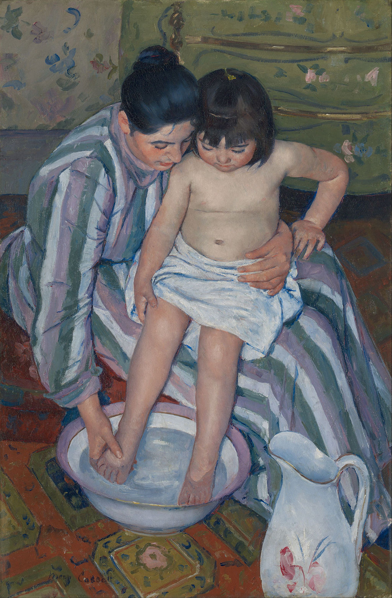

<head>
<meta charset="UTF-8" />
<meta name="keywords" content="drawing, painting" />
<meta name="description" content="drawings by Sunjy" />
<title>Sunjy</title>
<link rel="shortcut icon" type="image/x-icon" href="../../mImages/mCommon/favicon.ico" media="screen" />
<link rel="stylesheet" type="text/css" href="../../mCsses/mCommon/mCssA.css" />
<link rel="stylesheet" type="text/css" href="../../mCsses/mCommon/mCssB.css" />
<link rel="stylesheet" type="text/css" href="../../mCsses/mCommon/mCssC.css" />
<link rel="stylesheet" type="text/css" href="../../mCsses/mCommon/mCssD.css" />
<link rel="stylesheet" type="text/css" href="../../mCsses/mContent/mCssA.css" />
<link rel="stylesheet" type="text/css" href="../../mCsses/mContent/mCssB.css" />
<link rel="stylesheet" type="text/css" href="../../mCsses/mContent/mCssC.css" />
<link rel="stylesheet" type="text/css" href="../../mCsses/mContent/mCssD.css" />
</head>
<script type="text/javascript" src="../../mScripts/mContent/mContentAA.js" /></script>
<script type="text/javascript" src="../../mScripts/mContent/mContentAB.js" /></script>
<script type="text/javascript" src="../../mScripts/mContent/mContentAC.js" /></script>
<script type="text/javascript" src="../../mScripts/mContent/mContentAD.js" /></script>
<script type="text/javascript"></script> 
<script type="text/javascript">
document.write('<div class="mImgAbsolute"></div>');
/*
document.write('<p class="mFontSizeBColor" />From a white paper...</p>');
document.write('<table class="center"><tr><td>');
document.write('');
document.write('</td></tr></table>');
*/
</script>


<script type="text/javascript">
document.write('<p class="mFontSizeBColor" />The Child’s Bath</p>');
document.write('<p class="mFontSizeSColor" />By Mary Cassatt, 1893. “The Child’s Bath” was inspired by Japanese woodblocks and depicted a mother or female carer bathing of a child. The female figure holds up the child firmly and protectively while washing the child’s feet.<br><br>The left arm of the child braces against the mother’s thigh, while the other hand is holding on the child’s leg. The painting reflects the dignity of motherhood.<br><br>Cassatt was heavily influenced by her fellow Impressionist peers, especially Edgar Degas. In 1890, she was struck by the prints of the Japanese woodcuts.<br><br>Cassatt was drawn to the simplicity and clarity of the Japanese design, and the skillful use of blocks of color. Japanese prints and Degas inspired the perspective in this painting.</p>');
document.write('<table class="center" /><tr><td>');
document.write('<br>The left arm of the child braces against the mother’s thigh, while the other hand is holding on the child’s leg. The painting reflects the dignity of motherhood.<br><br>Cassatt was heavily influenced by her fellow Impressionist peers, especially Edgar Degas. In 1890, she was struck by the prints of the Japanese woodcuts.<br><br>Cassatt was drawn to the simplicity and clarity of the Japanese design, and the skillful use of blocks of color. Japanese prints and Degas inspired the perspective in this painting." />');
document.write('</td></tr></table>');
</script>


